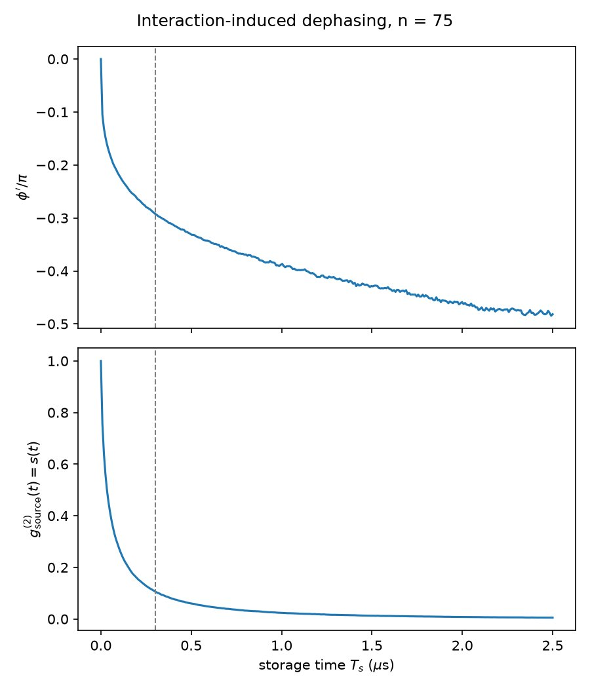
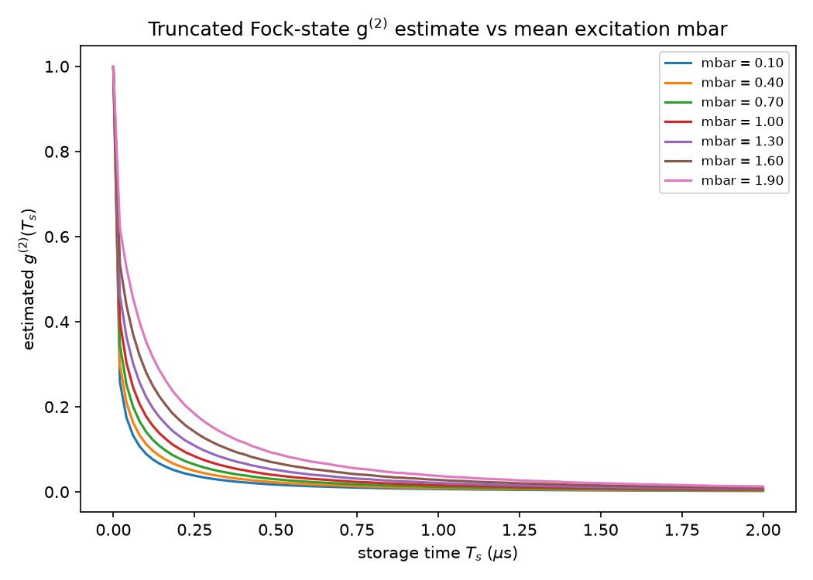
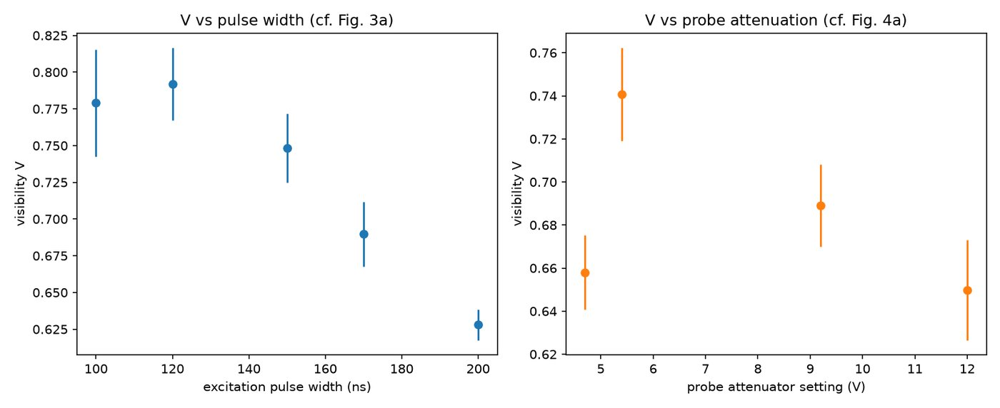

B. Yang, Y. Li, S. Nie, Y. Mei, H. Nguyen, P. R. Berman, A. Kuzmich
There has been a 60-year debate over whether superradiant emission requires the atomic ensemble to have a nonvanishing average dipole moment. Dicke’s original picture (a phased array of classical dipoles) says yes. But experiments built on a single shared excitation — where the ensemble’s average dipole moment is exactly zero by symmetry — are demonstrably superradiant too: the phase-matched emission depends on ⟨S+S+S−S−⟩, a correlation function, not on ⟨S+⟩ itself. So the two pictures don’t obviously agree, and it’s not settled which ingredient is actually doing the work.
This paper measures the collective dipole moment directly, using homodyne detection, and shows both answers are partly right: the spatial phase coherence imprinted on the ensemble is what makes superradiant emission possible at all, but when a nonzero dipole moment is present, it really does show up as a genuine interference signal with a classical reference field. The trick is state preparation: a two-photon retrieval pulse drives the ensemble into a superposition truncated to at most two collective excitations — a “superatom”,
and the retrieved field EA ∝ ⟨S+⟩ is overlapped with a classical probe EP of amplitude α and phase φ on a beamsplitter feeding a Hanbury Brown–Twiss pair. The combined intensity and its second-order correlation both carry an interference term linear in the dipole moment:
where f = B√N|β1|/|α| is the emission-to-probe amplitude ratio (the cooperativity), s = 2|β2|²/|β1|⁴ is the source field’s own g⁽²⁾, φ is the phase between the probe and the n=1 Dicke state, and φ′ is the interaction-induced phase shift of the n=2 component. In the simplified two-state limit (s→0) this collapses to closed forms for the fringe visibility and the peak correlation:
Experimentally, at destructive interference the n=1 and probe fields nearly cancel, isolating the doubly-excited n=2 contribution and producing a pronounced super-bunching peak, g⁽²⁾max=11.7±2.4; at constructive interference the combined field is antibunched, g⁽²⁾≈0.5. The fitted interference visibility is V≈0.85±0.03, and the interaction-induced phase φ′=−0.3π at n=75 — negative, consistent with the repulsive Rydberg interaction shifting the doubly-excited state’s energy.



interaction_phase_and_g2_dynamics.py — Monte Carlo dephasing simulation of the interaction-induced phase φ′ and g⁽²⁾(t)g2_truncated_fock_estimator.py — truncated-Fock-state g⁽²⁾ estimator sensitivity vs. mean excitation numberfringe_visibility_vs_pulse_width_and_probe.py — interference fringe visibility fit to real phase-scan photon-count data